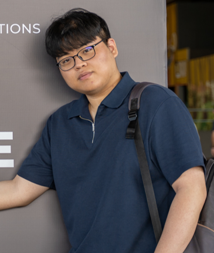
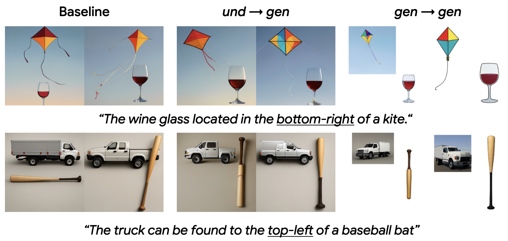
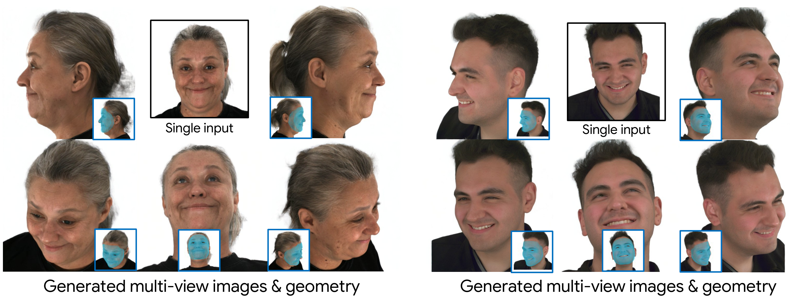
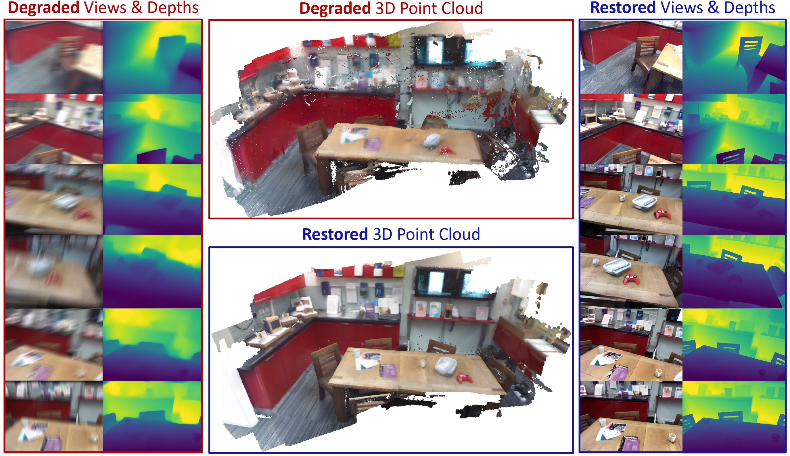
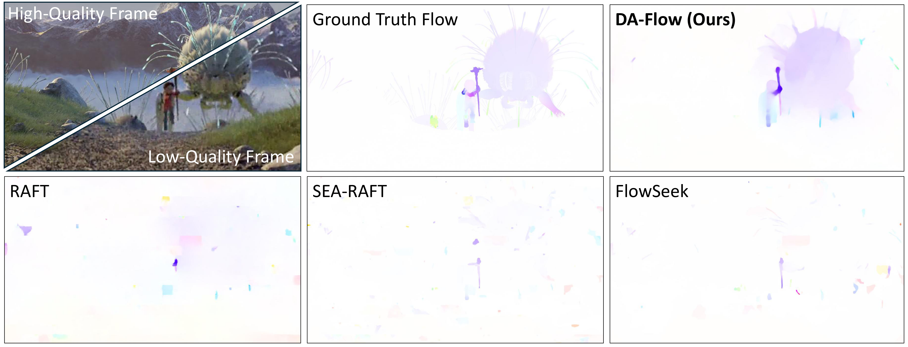
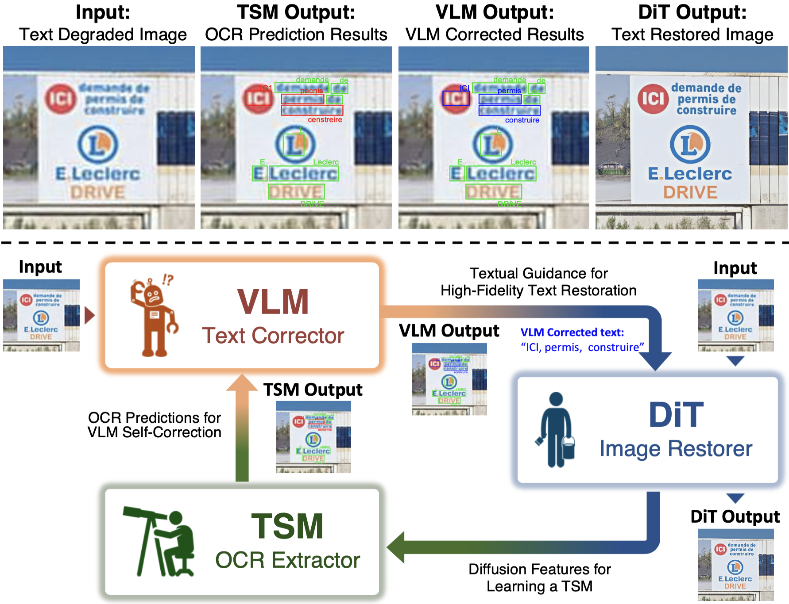
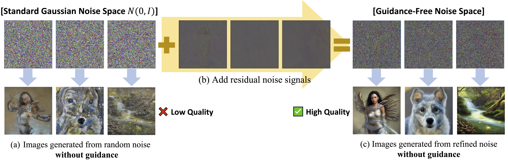
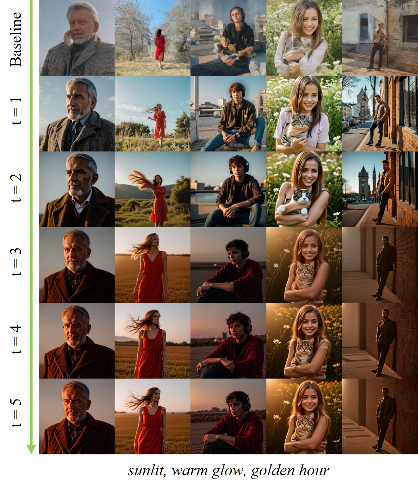
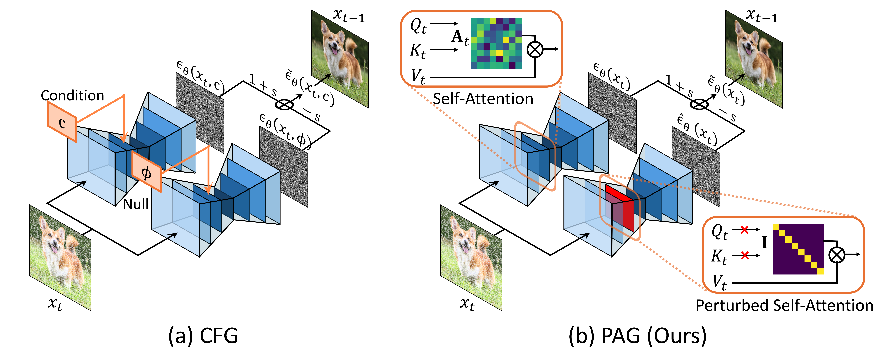

I have started as a visiting scholar at New York University, advised by Prof. Chen Feng.

Jaewon Min
I am a Ph.D. student at KAIST AI, advised by Prof. Seungryong Kim. My research interests lie in generative models for vision, with a focus on image/video generation, 3D/4D generation, and geometry-aware visual foundation models. I am also interested in world modeling and real-world applications of generative visual models, particularly in robot perception and manipulation.
News
Our work, Analysis on UMM transferability, has been accepted to ECCV 2026.
Our works, TAIR and NoiseRefine, have been accepted to ICLR 2026.
Our work, HeadHunter, has been accepted to NeurIPS 2025.
Our work, PAG, has been accepted to ECCV 2024.
Experience
Publications
* denotes equal contribution. · † denotes corresponding author.
2026






2025

2024

Self-rectifying diffusion sampling with perturbed-attention guidance
ECCV 2024300+ GitHub stars